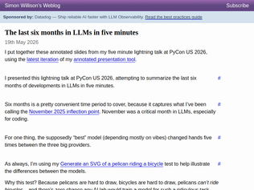
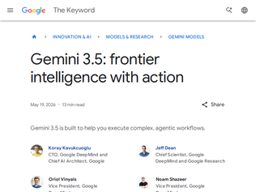
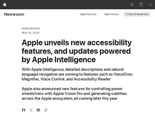
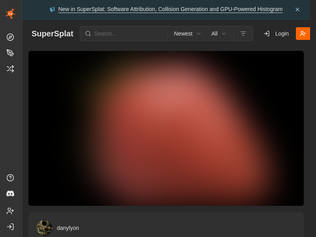
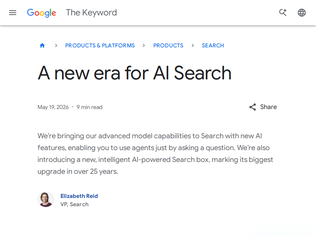

"Karpathy will start this week on Anthropic's pre-training team, which is responsible for the massive training runs that give Claude its core knowledge and capabilities, according to Anthropic.Source: https://www.axios.com/2026/05/19/anthropic-openai-karpathy-a..."
"I was expecting him to join Fei Fei Li's World Labs. Hope this turns out to be good for the community"
"Funny. He foreshadowed this in a recent interview. Saying that he may fall out of touch with evolving approaches and if any of the frontier labs would have him, he’d be interested.https://youtu.be/kwSVtQ7dziU?t=47m50s"

"> there’s zero chance any AI lab would train a model for such a ridiculous task.A lot of people here stated that this is a ridiculous metric, but no one seems to remember that it was introduced in the initial GPT report ("Sparks of Artificial General Intelligence: Early experiments with GPT-4" [1]) by Microsoft about 3 years ago. Shortly after that it was parroted by a network of booster accounts and became a thing every clueless AI hype peddler does to "test" models.100% marketing, 0% science.[1] https://arxiv.org/pdf/2303.12712"
"I wonder how much the 'inflection point' is a thing vs marketing. I'm sure the models got somewhat better, but even now when I'm trying to 'vibe code' a game with the latest models (combination of Codex w/ gpt5.5 and gpt5.3-codex), they really do struggle.They definitely get something barebones up and running, but it's far from a fully fledged application."
"> The coding agents got really goodIt's since november 2025, the so called "inflection point", that I'm still wondering for who coding agents become "really good".All I observe they got better at tool call and answering questions about big codebases, especially if the question has a vague pattern to search, and they're superuseful for that! For generating production code even with a lot of steering and baby sitting?Absolutely not, not quite there not even close in my experience.But we should stop talking about 1s and 0s, especially with marketing hype trains, there exist a gradient of capabalities that agents have that really depends on the intricacies of the codebase you're working on, I think everyone has yet to discover how to better apply these tools in their day to day work.But that totally collides with the current narrative, that flattens out our work to be always the same and that can be automated easily in each case, it's not!That's why the debate is so polizered imo, there isn't a shared experience"

"For those who would like to know the total and active parameter count of this model: even though Google doesn't disclose the model technicals, we can infer them within relatively tight margins based on what we do know.We know they serve the model on TPU 8i, which we have plenty of hard specs for (so we know the key constraints: total memory and bandwidth and compute flops). We can also set a ceiling on the compute complexity and memory demand of the model based on knowing they will be at least as efficient as what is disclosed in the Deepseek V4 Technical Report.We can also assume that the model was explicitly built to run efficiently in a RadixAttention style batched serving scenario on a single TPU 8i (so no tensor parallelism, etc. to avoid unnecessary overheads... Google explicitly designed the 8th-generation inference architecture to eliminate the need for tensor sharding on mid-sized models).We know Google intends to serve this model at a floor speed of around 280 tok/s too.Putting all these pieces together, we can confidently say this model is ~250-300B total, and 10-16B active parameters. Likely mostly FP4 with FP8 where it matters most.Visual: ┌────────────────────────────────────────────────────────┐ │ TPU 8i VRAM (288 GB) │ ├───────────────────────────┬────────────────────────────┤ │ Static Model Weights │ Dynamic Allocations & │ │ (250B - 300B @ Mixed │ Compressed KV Caches │ │ FP4/FP8) │ (RadixAttention / SRAM) │ │ ~110 GB - 150 GB │ ~138 GB - 178 GB │ └───────────────────────────┴────────────────────────────┘ I do model serving optimization work. This is napkin math.Edit: There's one factor I under-rated in my initial estimate... TurboQuant. This is a compute to KV memory use tradeoff. It's plausible with TurboQuant at a quality-neutral setting they've gotten the model up to 400B with similar economics. This is a variable effecting concurrency and the the way they decided total model size was likely based on what they see for the average user's average KV cache depth in real-world usage."
"The pelican is a lot: https://github.com/simonw/llm-gemini/issues/133#issuecomment...Not a great bicycle though, it forgot the bar between the pedals and the back wheel and weirdly tangled the other bars.Expensive too - that pelican cost 13 cents: https://www.llm-prices.com/#it=11&ot=14403&sel=gemini-3.5-fl..."
"Per million input/output tokens:Gemini 2.5 flash: $0.30/$2.50Gemini 3.0 flash preview: $0.50/$3.00Gemini 3.5 flash: $1.50/$9.00Interesting pricing direction. I don't think we have ever seen a 3x price increase for in the immediate next same-sized model (and lol @ 3 only ever getting a preview).3.5 flash costs similar to Gemini 2.5 pro which was $1.25/$10"
"Impressive curation effort. One comment: at least a few of the examples in the gallery seem to be of the "last, greatest" version, which actually isn't necessarily the greatest, and definitely not the most interesting.For example, the "Domain_OS SR10.4 - 01 VUE desktop" is a bit confusing, and may cause people to miss actual DomainOS.Apollo DomainOS (or Domain/IX, or simply Domain) had many unique and interesting things about it, but disappeared soon after being acquired by HP. It looked more like it might look if you took a programmer who had mostly only seen text terminals, and gave them a megapixel display with pixel framebuffer, a mouse, and the freedom to design the keyboard hardware, and told them to make what they would want to use.VUE (around when the Unix workstation vendors collaborated on standarding on a common desktop environment) was for HP-UX , which was a very different operating system, and entirely different user experience. More of an early attempt at let's give non-power-users an accessible computer with virtual desktops and everything.Similarly, Solaris had innovative OpenWindows (including but not limited to a networkable display system based on PostScript) before they got the common desktop environment.SunOS 4.x (retronym "Solaris 1.x") and earlier could run the earlier SunView environment, which was more like monochrome early Mac than the later Open Look look and feel of OpenWindows."
"No Pick?https://en.wikipedia.org/wiki/Pick_operating_systemMy first actual job was working for a local health authority here in the UK, and they had a Pick computer running some database application thing, I think to do with accounting. I had to run the backups. Sorry to be a whinger, I don't mean to belittle the monumental amount of work."
"I hadn't realized Domain/OS emulation was viable these days. It's one of the few systems that has actually "lost" features - the terminal-window-like thing (called pads, I think?) when in line mode had a dividing line at the bottom where your unconsumed typeahead was visible and you could continue to edit it until it got read - not just one line, the entire unconsumed input. (Not that it's a particularly desirable feature - it's just one that I'm pretty sure you can't implement with ptys...)"

"Apple loves to stealth test new tech in full public view by sneaking it into relatively mundane places, so debuting agentic AI via accessibility is very on brand.A few other examples:- The Touch Bar was much more than an OLED strip, it was Apple’s first move in the transition to Apple Silicon on macs. The Apple T1 chip in the 2016 Touch Bar MacBooks was the first solely Apple-designed processor to appear in a Mac and took over several responsibilities away from intel chipsets like power management, fans, sleep/wake, access to the camera & mic, and the secure enclave powering touch ID. Then the T2 added encryption of the SSD, audio management, image processing for the camera, and prevented tampering with the boot process- The iPhone 3G shipped with a Liquidmetal SIM eject tool, which is made from a strong custom metal alloy which is "practically unbendable by hand unless you want to hurt or cut your fingers." Although Apple hasn’t released anything with the alloy since then, now nearly 20 years later Apple is rumored to be using liquid metal in their upcoming foldable iPhone.- RealityKit had 3D scanning and a lot of other cool AR capabilities for years which didn’t make sense until the Apple Vision Pro was released."
"A while ago I signed up as a sighted person on Be My Eyes. I didn't get as many calls as I had hoped, but I was glad to help out on the few that I could. One call was to read envelopes of incoming mail, another was to read pill bottles, and then there was the two funny guys on big cozy chairs with shopping bags of cereal boxes and wanted to know what was what. I remember one guy really didn't like one type. The app had a unique feature for the sighted person to turn on the camera of the vision impaired person.https://www.bemyeyes.com"
"One thing Apple really needs to get right is speech to text transcription. They've nailed accessibility in so many ways and yet it feels like they're a decade behind on properly transcribing voices. At least half a decade.Input on the iPhone is so dreadful nowadays. Their palm rejection is definitely worse than before, so mistyping is more frequent. Their text-correction algorithm for typing is worse than before, and it frequently makes incorrect corrections to words that I don't notice, because they change words a few words back from where I typed. And STT hasn't improved. On top of that, my fingers are tired of the phone form factor. Please make the iphone not a chore to use, apple."
"For the record, Minnesota currently has a complete ban on sports betting.We've seen a couple other states that allow sports betting go after prediction markets. Personally, I feel that any state that allows sports betting is going to struggle to argue a case to ban prediction markets because you're essentially arguing over implementation details. Even arguments that certain prediction markets are ripe for insider trading or morally wrong fall a bit flat when you realize that traditional sportsbooks let you bet on things like college basketball player props and the little league world series.I'm still not sure Minnesota will win their case, but it feels like that detail gives them a lot better chance of winning compared to many other states."
"> The prohibition extends to services supporting prediction markets, like virtual private networks, that could allow consumers to disguise their location and get around the ban.Yikes. I am all for banning prediction markets but I feel like this is overreaching."
"This is great news. From my perspective from someone who grew up in the 90s, America feels like we took the turn towards Biff Tannen's Pleasure Paradise. A future very fa from our promise filled with gambling, social degradation, and worse economic prospects for everyone. Gambling sites like Polymarket are just a symptom. More states need to move in this direction, because its just a tax levied on the uninformed to insider cashing in"

"I built PlayCanvas in 2011 to power video games. Here we are in 2026 and it's powering strawberries."
"Wow this is a time killer... ended up here: https://superspl.at/scene/ff1d0393 beautiful!"
"I read [1], but I still don't quite know what I'm looking at. My guess is a 3D model reconstructed from lots of detailed pictures?[1] https://en.wikipedia.org/wiki/Gaussian_splatting"

"Nilay Patel has been talking about "Google Zero" - the moment when Google effectively stops sending any traffic to other sites - for a few years now: https://www.theverge.com/24167865/google-zero-search-crash-h..."
"I don't trust facts from LLMs. When I am searching for something, I usually want to find primary sources. As soon as a number is involved, I do my best to not even look at the AI output.Even though the result is often good and combines information from multiple sources, it can also get things wrong by combining information from different eras or just plain outdated advice. AFAICT, without primary sources, the result is for entertainment purposes only."
"It’s diverged quite a bit from the original: <form method="GET" action="/search"> ... <center> Search the web using Google! <br> <input type="text" name="query" value="" size="40"> <br> <select name="num"> <option value="10" selected>10 results <option value="30">30 results <option value="100">100 results </select> <input type="submit" value="Google Search"> <input type="submit" name="sa" value="I'm feeling lucky"> <br> <i>Index contains ~25 million pages (soon to be much bigger)</i> </center> ... </form> https://web.archive.org/web/19981111183552/http://google.sta..."
"> The permit, a Texas Pollutant Discharge Elimination System authorization known as TPDES, allowed up to 231,000 gallons of treated wastewater per day to be discharged into an unnamed ditch that flows into Petronila Creek and from there into Baffin Bay, a longtime South Texas saltwater fishing destination.Ok, so sounds like Tesla got the necessary legal provisions.> What it did not do, explicitly, was grant Tesla the right to use public or private property for wastewater conveyance.I'm confused, does Tesla have the right to dump water or not? I would assume that this is exactly what a permit is for?> The drainage district that manages the ditch the pipe was discharging into was never notified that the permit existedThis should be on the Texas Commission on Environmental Quality; they issued the permit, so it should be on them to notify the affected area.> Tesla also argues that the Eurofins sampling methodology was inappropriate, because the lab placed its sampling equipment in the ditch downstream of the outfall pipe rather than at the outfall itself. The permit requires monitoring at the outfall point, and the company has pointed out that ditch samples can pick up contaminants from sources that have nothing to do with Tesla’s wastewater.As the article itself says, that is a legitimate argument."
"Obviously, discharging "dark and murky" polluted water is bad. But some of the figures from the lab report don't seem that terrible:* Hexavalent chromium at 0.0104 milligrams per liter, just above the lab’s reporting limit of 0.01 mg/L. Hexavalent chromium is classified as a known human carcinogen by the US National Toxicology Program. It is the substance the Erin Brockovich case was built around.* Arsenic at 0.0025 mg/L. That is below the federal drinking water standard of 0.01 mg/L, but present.The hexavalent chromium is also just barely above the California drinking water standard [1][1] https://www.waterboards.ca.gov/drinking_water/certlic/drinki..."
"> What [the wastewater discharge permit] did not do, explicitly, was grant Tesla the right to use public or private property for wastewater conveyance. The drainage district that manages the ditch the pipe was discharging into was never notified that the permit existed.I find it kinda worrying that so much of the legal weight of this case doesn't seem to be about the untreated wastewater discharge at all but only about the detail that they used a county-owned ditch to do so.So if Tesla had dug their own ditch or built the pipe all the way to Petronila Creek, the discharge would have been no problem?(Well, that's not completely true as the additional pollutants aren't covered by the permit either - but without the ditch issue, probably no one would have commissioned an analysis of the water?)"
">Valadon said he reached out because the owner in this case wasn’t responding and the information exposed was highly sensitive.obviously leaking the credentials itself is crazy, given that its (a contractor to) CISA, but to not respond when notified? crazy crazy.but wait! it gets worse somehow"“AWS-Workspace-Firefox-Passwords.csv” — listed plaintext usernames and passwords for dozens of internal CISA systems"while i understand and sympathize with the fact that CISA is kind of being gutted, a passwords.csv with weak passwords is inexcusable incompetence. not much budget is required for a password manager.embarrassing all around."
"I think one thing that people are sleeping on is passing a ton of secrets to OpenAI and Anthropic or your OpenRouter by having a .env or secrets on disk in your repo, but not checked inYour LLM will happily read the entire file, ship it off to be training data for future versions of ChatGPT, and not raise any flags, because let's be fair it was on ok thing to check if all the env vars were set, or it you had set up the database password for the app.It's time for orgs to audit and rotate secrets wherever they are stored in disk or in logs, and switch to SOPS or Vault or whatever to keep these out if plaintext except exactly when needed."
"In 2026, storing government credentials in a repo and not having scanners to flag it should be investigated. I am highly suspicious of anyone doing this in a professional capacity. If I worked at a foreign intelligence agency and saw this, I would first think it's a honeypot, and an unimaginative one because it's so lacking in subtlety."
I’ve joined Anthropic
"Karpathy will start this week on Anthropic's pre-training team, which is responsible for the massive training runs that give Claude its core knowledge and capabilities, according to Anthropic.Source: https://www.axios.com/2026/05/19/anthropic-openai-karpathy-a..."
"I was expecting him to join Fei Fei Li's World Labs. Hope this turns out to be good for the community"
"Funny. He foreshadowed this in a recent interview. Saying that he may fall out of touch with evolving approaches and if any of the frontier labs would have him, he’d be interested.https://youtu.be/kwSVtQ7dziU?t=47m50s"